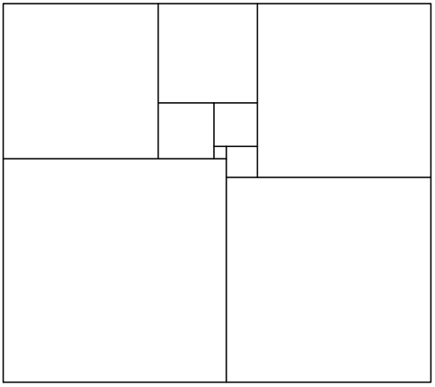
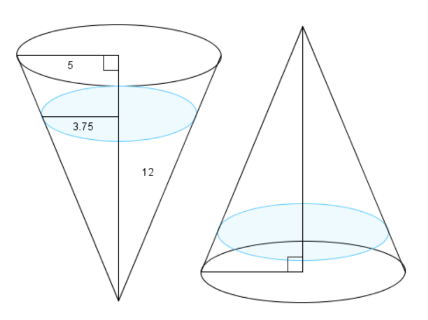
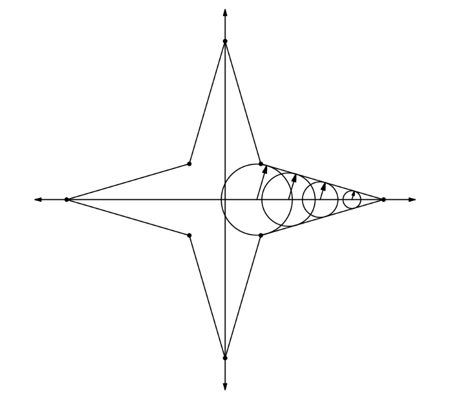
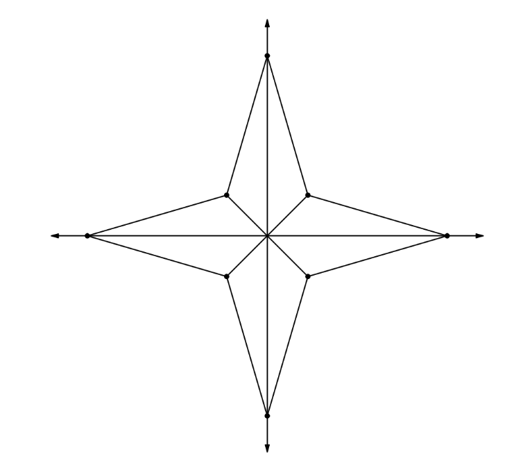

Зуны бага сорилго №1.1
І сорил: 2025 оны 6 сарын 13
Энэ сорилгыг AIME I 2000 тэмцээний бодлогуудыг ашиглан зохиосон болно.
Бодох хугацаа 3 цаг.
Бүх хариу нь 0-ээс 999 хүртэлх бүхэл тоо байна.
Бодлого бүр 1 оноотой.
Бодлого 1
Ямар ч байдлаар \(10^{n}\)-г хоёр эерэг бүхэл тооны үржвэр болгон задлахад, уг хоёр тооны ядаж нэг нь \(0\) цифрийг агуулсан байх хамгийн бага эерэг бүхэл тоо \(n\)-ийг ол.
Бодлого 2
\(u\) ба \(v\) нь бүхэл тоонууд ба \(0 < v < u\) нөхцөлийг хангана. \(A = (u,v)\) ба \(B\) нь \(A\) цэгийг \(y = x\) шулууны хувьд тэгш хэмтэй хувиргасан, \(C\) нь \(B\) цэгийг \(y\) тэнхлэгийн хувьд тэгш хэмтэй хувиргасан, \(D\) нь \(C\) цэгийг \(x\) тэнхлэгийн хувьд тэгш хэмтэй хувиргасан, харин \(E\) нь \(D\) цэгийг \(y\) тэнхлэгийн хувьд тэгш хэмтэй хувиргасан цэгүүд байв. Хэрвээ таван өнцөгт \(ABCDE\)-ийн талбай нь \(451\) бол \(u + v\)-г ол.
Бодлого 3
\(a\) ба \(b\) нь харилцан анхны эерэг бүхэл тоонууд бөгөөд \((ax + b)^{2000}\)-г задлах үед \(x^{2}\) ба \(x^{3}\)-н коэффициентууд тэнцүү байв. \(a + b\)-г ол.
Бодлого 4
Доорх тэгш өнцөгт нь есөн үл огтлолцох квадратуудад дараах байдлаар хуваагдсан байв. Хэрвээ тэгш өнцөгтийн өргөн ба өндөр нь харилцан анхны эерэг бүхэл тоонууд бол тэгш өнцөгтийн хүрээний уртыг ол.

Бодлого 5
Хоёр хайрцаг тус бүрд хар ба цагаан бөмбөлгүүд байсан ба хоёр хайрцагт байгаа бөмбөлгүүдийн нийт тоо нь \(25\). Тус бүрээс нэг бөмбөлгийг санамсаргүйгээр авав. Авсан хоёр бөмбөлөг хоёулаа хар байх магадлал нь \(\frac{27}{50}\) бөгөөд хоёр бөмбөлөг хоёулаа цагаан байх магадлал нь \(\frac{m}{n}\) байсан бол \(m + n\)-г ол. Энд \(m\) ба \(n\) нь харилцан анхны эерэг бүхэл тоонууд.
Бодлого 6
Хэдэн эрэмбэлэгдсэн хос \((x,y)\) \((0 < x < y < 10^{6})\) бүхэл тоонуудын хувьд \(x\) ба \(y\)-ийн арифметик дундаж нь геометр дунджаасаа яг \(2\)-оор их байх вэ?
Бодлого 7
\(x,\) \(y,\) \(z\) нь гурван эерэг тоо бөгөөд дараах тэгшитгэлүүдийг хангана: \(xyz = 1,\) \(x + \frac{1}{z} = 5,\) болон \(y + \frac{1}{x} = 29.\) Тэгвэл \(z + \frac{1}{y} = \frac{m}{n}\) бол \(m + n\)-г ол. Энд \(m\) ба \(n\) нь харилцан анхны эерэг бүхэл тоонууд.
Бодлого 8
Конус хэлбэртэй савны өндөр нь \(12\) см, суурийн радиус нь \(5\) см байв. Савны хошуу нь доош харсан, суурь нь хэвтээ байрлалтай үед дотор нь байх усны гүн \(9\) см. Харин хошуу нь дээш харсан үед усны гүн нь \(m - n\sqrt[3]{p}\) байсан бол \(m + n + p\)-г ол. Энд \(m\), \(n\), \(p\) нь эерэг бүхэл тоонууд бөгөөд \(p\) нь ямар ч анхны тооны кубд хуваагддаггүй.

Конусын эзлэхүүнийг \(V = \frac{\pi}{3}r^2h\) томьёогоор олдог. Хоёр дахь тохиолдол буюу конус дээшээ харсан үедэх хоосон агаарын өндөр, радиусыг \(h', r'\) гэж тэмдэглэвэл (тэгвэл усны өндөр нь \(12 - h'\) болно), усны эзлэхүүнийг дараах байдлаар илэрхийлж болно: \(\frac{\pi}{3}r^2h - \frac{\pi}{3}(r')^2h'\).
Төсөөтэй гурвалжны аргаар, эхний тохиолдлын конус дахь ус ба том конусын талуудын харьцаа нь \(\frac{3}{4}\) байна. Мөн \(r' = \frac{rh'}{h}\) байна. Эдгээрийг тэнцүүлбэл,
\[\begin{align} \frac{\pi}{3}\left(\frac{3}{4}r\right)^2 \left(\frac{3}{4}h\right) &= \frac{\pi}{3}\left(r^2h - \left(\frac{rh'}{h}\right)^2h'\right) \\ \frac{37}{64}r^2h &= \frac{r^2}{h^2}(h')^3 \\ h' &= \sqrt[3]{\frac{37}{64} \cdot 12^3} = 3\sqrt[3]{37} \end{align}\]
Иймд хариу нь \(12 - h' = 12 - 3\sqrt[3]{37}\) бөгөөд \(m+n+p=\boxed{52}\) болно.
Бодлого 9
Доорх систем тэгшитгэл \[\begin{eqnarray*} \log_{10}(2000xy) - (\log_{10}x)(\log_{10}y) & = & 4 \\ \log_{10}(2yz) - (\log_{10}y)(\log_{10}z) & = & 1 \\ \log_{10}(zx) - (\log_{10}z)(\log_{10}x) & = & 0 \end{eqnarray*}\] \((x_{1},y_{1},z_{1})\) ба \((x_{2},y_{2},z_{2})\) гэсэн хоёр шийдтэй. \(y_{1} + y_{2}\)-г ол.
Бодлого 10
\(x_{1},x_{2},x_{3},\ldots,x_{100}\) гэсэн тоон дараалал нь дараах шинж чанартай: \(1\)-ээс \(100\) хүртэлх бүхэл тоо \(k\) бүрийн хувьд, \(x_{k}\) нь бусад \(99\) тооны нийлбэрээс \(k\)-аар бага. Хэрвээ \(x_{50} = \frac{m}{n}\) бол \(m + n\)-г ол. Энд \(m\) ба \(n\) нь харилцан анхны эерэг бүхэл тоонууд.
Бодлого 11
\(S\)-г \(\frac{a}{b}\) хэлбэртэй бүх тоонуудын нийлбэр гэж тодорхойлъё. Энд \(a\) ба \(b\) нь \(1000\)-ын харилцан анхны эерэг хуваагчид. Тэгвэл \(\frac{S}{10}\)-аас хэтрэхгүй хамгийн их бүхэл тоо хэд вэ?
\(1000 = 2^3 \cdot 5^3\) тул түүний бүх хуваагчдыг \(2^m5^n\) хэлбэрт бичиж болно. Иймд \(\frac{a}{b}\) харьцааг мөн \(2^x5^y\) хэлбэртэйгээр илэрхийлж болно, энд \(-3 \le x,y \le 3\) байна. Иймд \(a/b\) хэлбэртэй бүх тоонууд дараах үржвэр дотор нэг удаа орж ирнэ:
\[(2^{-3} + 2^{-2} + 2^{-1} + 2^{0} + 2^{1} + 2^2 + 2^3)(5^{-3} + 5^{-2} +5^{-1} + 5^{0} + 5^{1} + 5^2 + 5^3)\]
Геометр прогрессын томьёог ашиглавал энэ нь дараах хэлбэрт шилжинэ:
\[S = \frac{2^{-3}(2^7 - 1)}{2-1} \cdot \frac{5^{-3}(5^{7} - 1)}{5-1} = \frac{127 \cdot 78124}{4000} = 2480 + \frac{437}{1000}\].
Иймд \(\left\lfloor \frac{S}{10} \right\rfloor = \boxed{248}\) болно.
Бодлого 12
\(f\) функц нь дараах нөхцөлүүдийг бүх бодит \(x\) утгын хувьд хангана: \[f(x) = f(398 - x) = f(2158 - x) = f(3214 - x)\] Тэгвэл \(f(0), f(1), f(2), \ldots, f(999)\) тоонууд хамгийн ихдээ хэдэн ялгаатай утгуудыг авч чадах вэ?
\[\begin{align*} f(2158 - x) = f(x) &= f(3214 - (2158 - x)) &= f(1056 + x) \\ f(398 - x) = f(x) &= f(2158 - (398 - x)) &= f(1760 + x) \end{align*}\]
Энд \(\mathrm{gcd}(1056, 1760) = 352\) тул Евклидийн алгоритмын дагуу:
\[f(x) = f(352 + x)\]
гэж дүгнэж болно. Тэгэхээр \(f(x)\) нь \(352\) үетэй функц бөгөөд зөвхөн нэг үе дахь утгууд болох \(f(0), f(1), \ldots, f(351)\)-г мэдэхэд бусад бүх \(x\) дээрх утгыг тодорхойлж болно. Иймд \(f(x)\) нь ихдээ \(352\) ялгаатай утгатай байж чадна.
Гэхдээ бас \(f(x) = f(46 - x) = f(398 - x)\) гэдгийг мэдэж байгаа. Энэ нь \(x = 24, 25, \ldots, 46\) болон \(x = 200, 201, \ldots, 351\) утгууд давхардаж буй гэсэн үг. Иймээс давхардсан утгуудыг хасвал:
\[352 - (46 - 24 + 1) - (351 - 200 + 1) = \boxed{ 177 }\]
ялгаатай утга байна.
\(f(23), f(24), \ldots, f(199)\) утгууд бүгд ялгаатай байж болохыг харуулахын тулд нөхцөлийг хангах жишээ функц олоход болно. Дараах функц нь нөхцөлийг хангана: \(f(x) = \cos \left(\frac{360}{352}(x-23)\right)\) (градусаар авна).
Бодлого 13
Өргөн уудам тал нутагт, галын машин хоёр перпендикуляр хурдны замын огтлолцол дээр байрлаж байв. Машин хурдны замаар цагт \(50\) км, харин шороон замаар явахдаа цагт \(14\) км хурдтай явдаг. Галын машин зургаан минутын дотор хүрч чадах цэгүүдийн олонлогийг авч үзье. Уг цэгүүдээр үүсэх дүрсийн талбай нь \(\frac{m}{n}\) кв.км бол \(m + n\)-г ол. Энд \(m\) ба \(n\) нь харилцан анхны эерэг бүхэл тоонууд.
Хоёр хурдны замын огтлолцлыг \(O\) гэж үзье. Хурдны замуудыг \(x\) болон \(y\) тэнхлэгүүд гэж авъя. Машин \(x\) тэнхлэгийн эерэг чиглэлд явж байгаа тохиолдлыг авч үзье.
Машин \(x\) км явсны дараа өнгөрсөн хугацаа нь \(t = \frac{d}{r} = \frac{x}{50}\) цаг байна. Хэрэв энэ үед машин хурдны замаас гарвал, хамгийн ихдээ \(t = \frac{1}{10} - \frac{x}{50}\) цаг явж чадна. Энэ хугацаанд туулж чадах зам нь \(d = rt = 14t = 1.4 - \frac{7x}{25}\) км байна. Иймд машин \((x,0)\) цэгийг төв болгосон, радиус нь \(1.4 - \frac{7x}{25}\) байх тойргийн хаана ч очих боломжтой.
Эдгээр бүх тойргууд нь \((5,0)\) цэгт төвтэй гомотет (томсгосон) байна.


Дүрс нь дээр харуулсанчлан 8 тэнцүү гурвалжнаас тогтдог болохыг олж мэдмэгц, бид нийт талбайг олж чадна.
Нэг гурвалжны талбай нь \(\frac{175}{62}\) гэж гарах тул нийт талбай \(\frac{700}{31}\). Иймд хариу нь \(\boxed{731}\).
Бодлого 14
\(\triangle ABC\) гурвалжны \(B\) ба \(C\) оройны өнцгүүд тэнцүү. \(P\) болон \(Q\) цэгүүд нь харгалзан \(\overline{AC}\) болон \(\overline{AB}\) хэрчим дээр орших ба \(AP = PQ = QB = BC\) байв. Хэрэв \(\angle ACB\) нь \(\angle APQ\)-с \(r\) дахин их ба \(r\) нь эерэг бодит тоо бол \(\lfloor 1000r \rfloor\)-г ол.
Бодлого 15
2000 ширхэг багц карт \(1\)-ээс \(2000\) хүртэлх бүхэл тоогоор тэмдэглэгдсэн бөгөөд картууд ямар нэгэн эрэмбэгүйгээр давхарлан байрлажээ. Дээд талын картыг авч ширээн дээр тавиад, дараагийн картыг багцын доод талд нь шилжүүлэв. Дараа нь шинээр гарч ирсэн дээд талын картыг ширээн дээрх картын баруун талд тавьж, дараагийн картыг доод талд нь шилжүүлэв. Энэ үйлдлийг бүх карт ширээн дээр тавигдах хүртэл давтсаны дараа ширээн дээрх картуудын тоо зүүнээс баруун руу \(1,2,3,\ldots,1999,2000\) гэсэн өсөх эрэмбээр байрласан байв. Тэгвэл анх \(1999\) гэсэн картын дээр хэдэн карт байсан бэ?